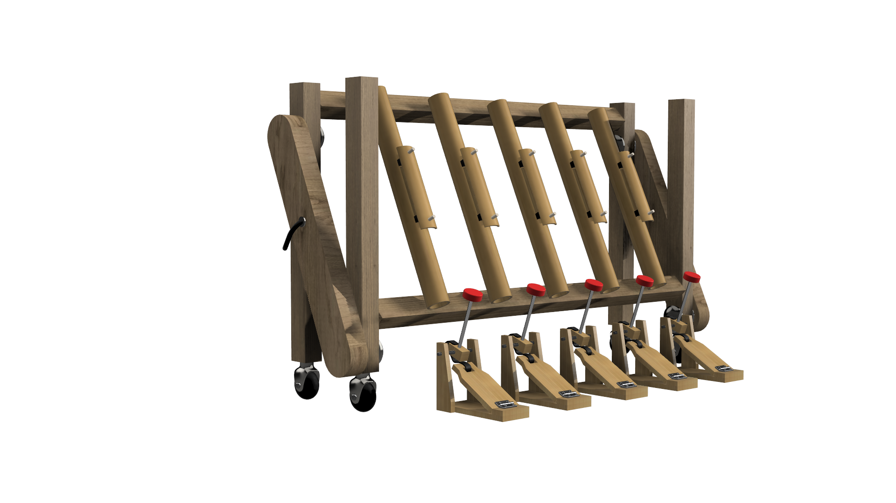
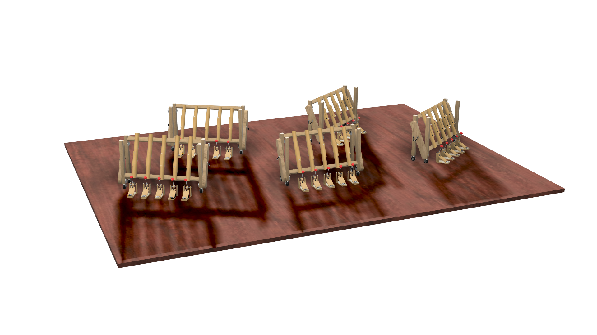
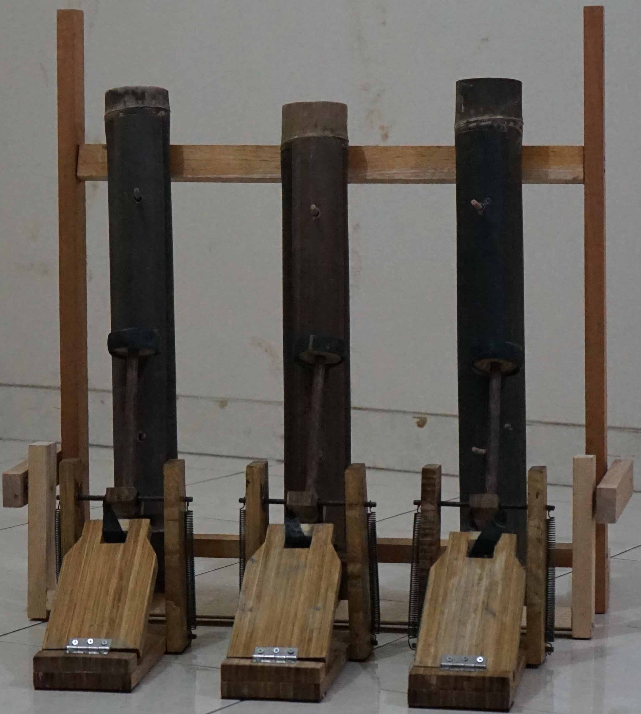
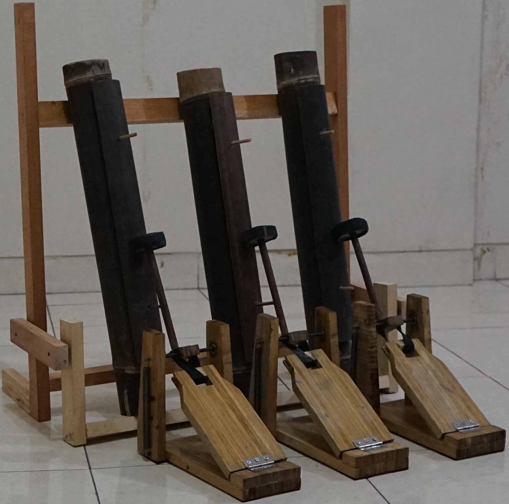

Bamboo Music Instrument for 6 - 9 years old to Practice Their Motoric Skill
Project Background
This is my final assignment for graduation requirement held in 2021. The project itself focusing in using high motoric usability musical instrument for 6 - 9 years old as a solution for activating brain function and problem dissociate targeted group from excessive smartphone usage.
Problem
Lack of physical innovative new equipment for children these days, and lack of immplementation bamboo material on products drive this project to happen.
Solution
Building attractive, applicable, and functional outdoor bamboo instrument to help children learn basic music principle, believed will help developing motoric skills for children who needed the most at that stage.
Concept
In this project I'm using bamboo for the main material, because bamboo are endemic plant from Indonesia, easily access, relatively easy to be crafted, economically affordable, and environmentally sustainable. Certainly this project involves various expert from several fields, such as angklung craftsman, guitar luthier, music teacher and children who learn music. The instrument intended to applied in outdoor usage such as in musical stage performing, and in the daily basis this musical instrument can be used for musical educating purpose.
Glimpse of this project
Click image to see full screen
Initial Sketch

Final Design
3D Model
Complete 3D Model
Prototype Photo 1
Prototype Photo 2